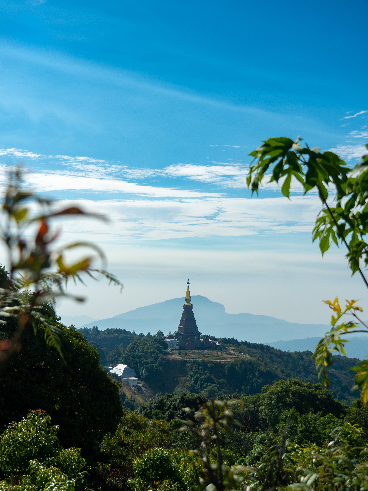

치앙마이(Chiang Mai)의 화려한 별칭은 '북방의 장미'다. 치앙마이는 태국 북부의 문화 중심지로 란나 타이(LanNa Thai) 왕국의 수도였던 곳이다. 옛 타이 왕국의 흔적에서 풍기는 문화적 깊이는 방콕의 화려한 200년 세월을 뛰어넘는다. 밀집된 사원 골목 사이로 돌길이 흐르는 구시가지는 아직도 성곽과 해자가 둘러싸고 있다. '북방의 장미'이지만 자극적인 가시 대신 온화한 정서가 서린 땅이다.
치앙마이는 태국 제2의 도시지만 방콕처럼 규모가 웅대한 것은 아니다. 기온이 후텁지근하지도 않다. 치앙마이는 해발 300m의 고산지대여서 동남아의 다른 도시보다 서늘한 날씨를 자랑한다. 건기인 3월까지는 밤 기온이 10도까지 내려가기도 한다. 골프 마니아들에게는 라운딩의 적소로 알려져 있지만 쾌적한 기후 속에 만나는 유산들의 면면이 더욱 차분하게 돋보이는 땅이다. 치앙마이의 구시가지 일대는 걸어서 둘러볼 수 있는 소담스런 풍경이다.